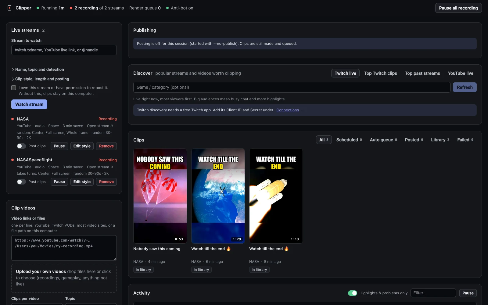
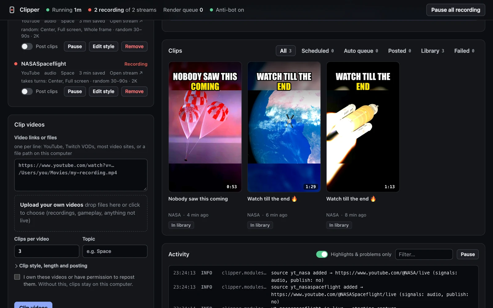
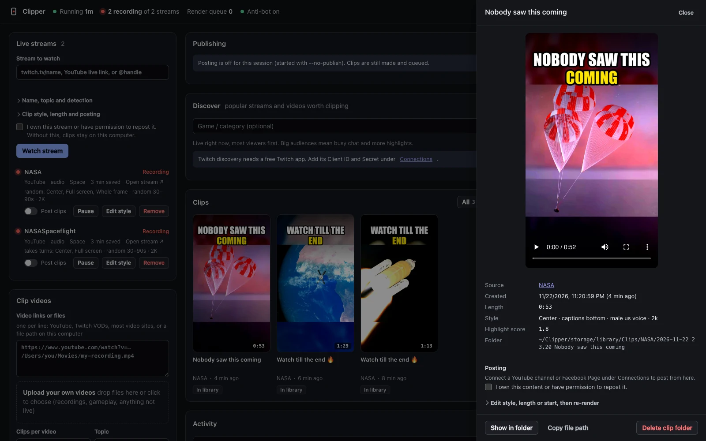
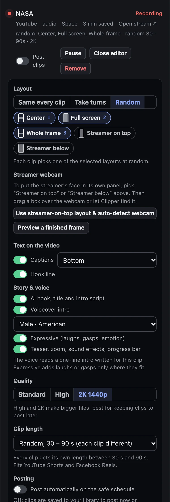
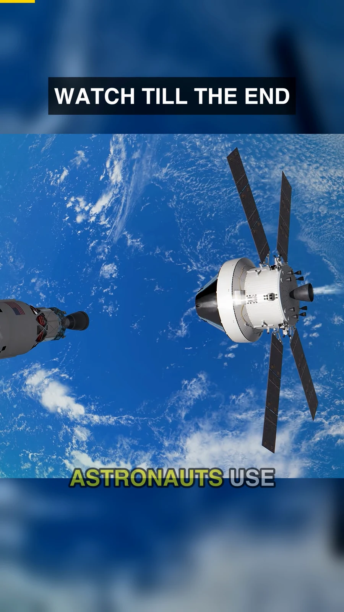

Live streams to Shorts & Reels, automatically.
Clipper watches Twitch and YouTube streams or any video, finds the moments people react to, and cuts vertical clips with captions, a hook and a thumbnail. It can post them to YouTube Shorts and Facebook Reels on a safe schedule, all from a dashboard on your own computer.

Everything from stream to post
Runs on your machine. Your recordings, logins and AI stay local; it only talks to the platforms you connect.
Records at full quality
Twitch and YouTube lives at the stream's highest quality (1080p60, 1440p, 4K), lossless, with automatic reconnects.
Finds the highlights
Chat-speed spikes and sudden loud moments mark what's worth clipping. No manual scrubbing.
Ended streams & videos
Paste any link or drop a file. For long videos it downloads only the audio, finds the highlights, then fetches just those minutes.
Five vertical layouts
Center, Full screen, Whole frame, Streamer on top or below, with webcam auto-detect. Rotate or randomise them per stream.
Captions, hooks, thumbnails
Word-by-word captions (Whisper), a hook line and an auto-picked thumbnail. Output in 2K (1440×2560).
Optional local AI
With Ollama: specific hooks, titles and a spoken intro (Kokoro voice), with checks that reject made-up facts.
Many channels & Pages
Connect several YouTube channels and Facebook Pages at once. Post each clip to one, some or all of them, each with its own daily limit.
Safe, scheduled posting
Daily limits and spacing per account, "post now", scheduling and auto-post. Logins are stored encrypted and refresh by themselves.
Every clip a bit different
Random length (30–90 s) and random layouts, so a channel's uploads don't look like one template.
The dashboard
Open http://127.0.0.1:8787. Add streams, watch them record, review clips, and post or schedule them without the terminal.




See it in action
These accounts are run with Clipper: every Short and Reel there was found, cut, captioned and uploaded by it, to a YouTube channel and a Facebook Page at the same time.
Install in one command
The installer sets up FFmpeg, Node.js and uv (which brings its own Python), then the clipper command. Each step is skipped if it's already done.
curl -fsSL https://raw.githubusercontent.com/k-a-l/Clipper/main/scripts/install.sh | sh
Uses Homebrew on macOS, or apt / dnf / pacman / zypper on Linux.
powershell -ExecutionPolicy ByPass -c "irm https://raw.githubusercontent.com/k-a-l/Clipper/main/scripts/install.ps1 | iex"
Windows 10/11, in PowerShell. Uses winget.
docker run -d --name clipper --restart unless-stopped \ -v clipper-data:/data -p 127.0.0.1:8787:8787 ghcr.io/k-a-l/clipper:latest
For servers and NAS boxes. Put your .env in the /data volume.
uv tool install --python 3.12 git+https://github.com/k-a-l/Clipper # or: pipx install git+https://github.com/k-a-l/Clipper
Install FFmpeg and Node.js yourself first.
- Start it:
clipper ui --openopens the dashboard. - Add a stream (
twitch.tv/nameor a YouTube live link), or paste video links. - Review clips as they appear. Re-cut, restyle, or keep them local.
- Connect accounts to post: see the credentials guide below.
Connect your accounts
Clipper uses your own free developer apps, so quotas and logins belong to you. Step-by-step guide: docs/CREDENTIALS.md.
Only post what you have the rights to. Clipper only queues clips from sources you mark as yours or permitted. Everything else stays on your computer. Many streamers run official clipping programs.